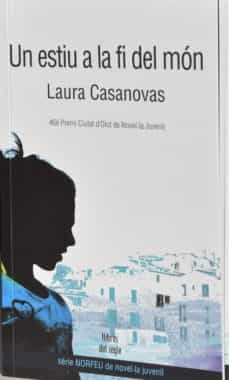
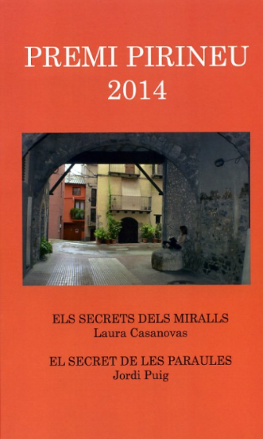
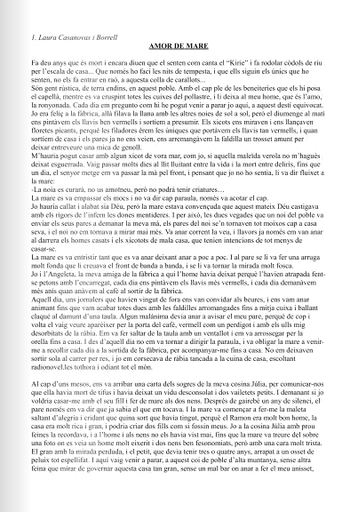
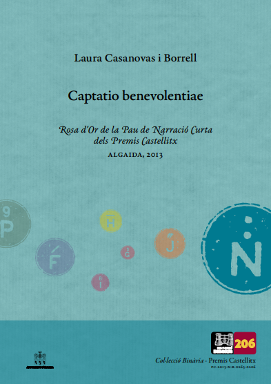

Veure més llibres
12/12/2020
Ignot de Manuel Baixauli
Fes clic per comprar
Els que som fans incondicionals de la prosa de Manuel Baixauli celebrem l’aparició de cada nou llibre seu amb alegria d’epifania. I el millor del cas és que el nostre autor no ens defrauda mai.
Obrir les planes d’un llibre de Baixauli, i Ignot n’és una molt bona mostra, és entrar en un món nou, d’escenaris i personatges onírics, una altra realitat, que només soc capaç de comparar amb una sessió d’hipnosi. Ignot t’atrapa des de les primeres línies, quan només entrar al llibre caus en un estat semihipnòtic de fascinació que no et deixa fins que acabes el llibre, immers en una situació d’estranyesa, d’allunyament de la lògica convencional i dels paisatges de la vida quotidiana.
En els llibres i l’escriptura de Manuel Baixauli tot és estrany, la sensació és de no entendre res, ni de la trama, ni de les motivacions dels personatges. La sensació és la d’estar perdut en un mar de lletres i de no acabar de ser capaç de saber què està passant, quin és el perfil i la forma del món i dels homes i les dones que s’entreveuen a les pàgines. Aquest desconcert, aquesta sensació d’estranyesa que fins i tot altera el ritme de la respiració durant la lectura, no és mai avorrida ni esgotadora, sinó fascinant, addictiva. Ignot et fa entrar en un món nou, desconegut, irreal, màgic, inquietant del que no vols sortir, ple de personatges fascinants i estranys però que entren molt endins.
Laura Casanovas Borrell
Retornar a tots els llibres
Retornar a totes les cites
Laura Casanovas Borrell
Laura Casanovas va néixer a La Seu d’Urgell l’any 1973. És llicenciada en filologia catalana i ha treballat de lexicògrafa, professora d'idiomes i venedora de llaminadures, entre d'altres professions.
Actualment és assessora lingüística als Centres d’Autoaprenentatge de Català d’Andorra i viu amb la seva família, tres gossos i un gat en un poblet diminut del Pirineu. És una apassionada dels viatges, les passejades per la muntanya, les bones històries i la seva gent. Un estiu a la fi del món és la seva primera novel·la.
Obres publicades
 Altres contes
 
Troba'm a la Wikipedia!
Laura Casanovas Borrell
Laura Casanovas va néixer a La Seu d’Urgell l’any 1973. És llicenciada en filologia catalana i ha treballat de lexicògrafa, professora d'idiomes i venedora de llaminadures, entre d'altres professions.
Actualment és assessora lingüística als Centres d’Autoaprenentatge de Català d’Andorra i viu amb la seva família, tres gossos i un gat en un poblet diminut del Pirineu. És una apassionada dels viatges, les passejades per la muntanya, les bones històries i la seva gent. Un estiu a la fi del món és la seva primera novel·la.
Obres publicades
Altres contes
Troba'm a la Wikipedia!